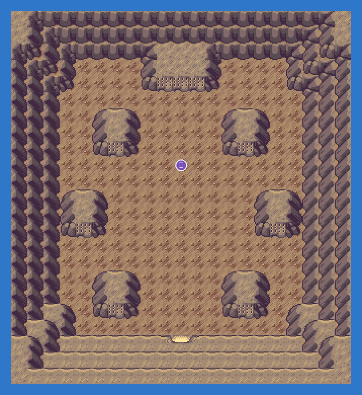
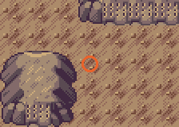

With Relicanth leading and Wailord bringing up the rear, read the far tablet. A rumble tells you the three ruins are open.
Come back with six badges: Regigigas stands in this room. Level 50, Slow Start, absurd Attack once it wakes up. Bring Dusk Balls.
Static encounters: walk up and press A. Caught = gone for good; beaten or fled = back next visit.